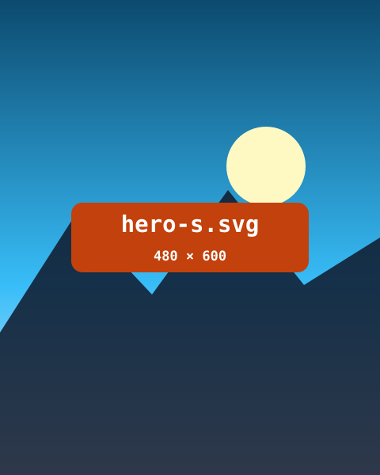

Day one starts at the glacier lagoon. Icebergs drift past the black beach while the sun barely sets. The gallery further down only matters to readers who scroll that far.
Travel diary
Iceland in 7 days

Gallery


Travel diary

Day one starts at the glacier lagoon. Icebergs drift past the black beach while the sun barely sets. The gallery further down only matters to readers who scroll that far.